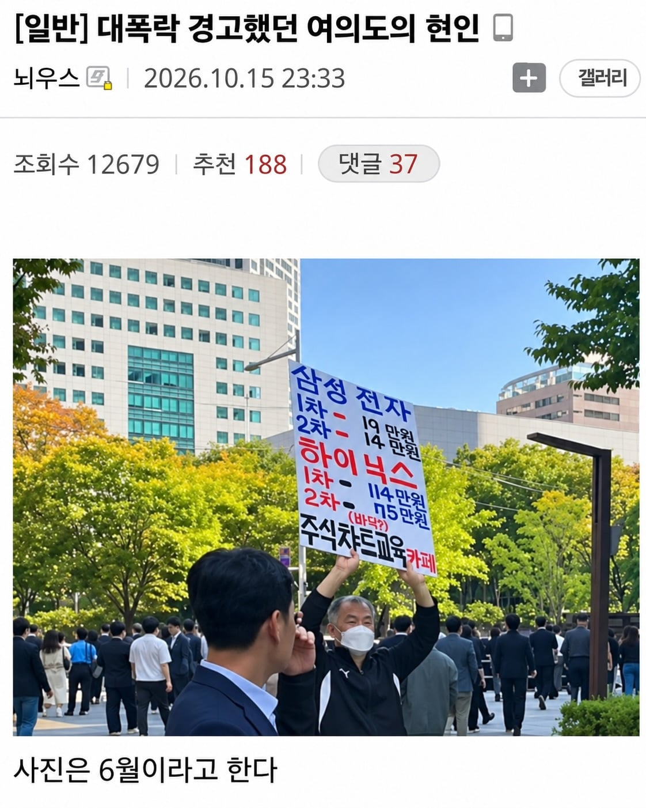
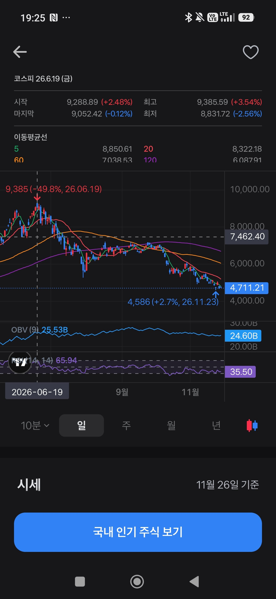

55 · 6 · 13 시간 전 · 원문

딱 고점에서 ㄷㄷㄷㄷㄷ

수집 당시 댓글 6개
i6534554356i · 13 시간 전
그럼 지금 주식 들어가야돼? 해 말아? 아님 더 떨어질?
↳ 답글 · 쓱간디 · 2 시간 전
중요한건 니새끼가 그 돈을 묻어놓고 얼마나 오래 버틸 수 있느냐임 묻고자 하는 그 돈이 30년뒤에나 쓸 노후자금이라면 나스닥 역대급 세일중인 지금이 절호의 기회임
구름과자 · 13 시간 전
정상화의신 · 12 시간 전
'한명이라도 더 많은 사람을 구해야돼.. 제발 내 말을 들어줘'
여왕벌사냥꾼 · 5 시간 전
리산 알 가입
x0은0 · 방금 전
4400이면 버텨야지 뭐....
그럼 지금 주식 들어가야돼? 해 말아? 아님 더 떨어질?